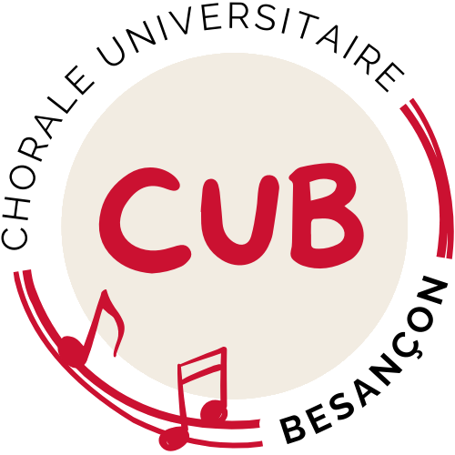

<div class="w3-top">
    <div class="w3-bar w3-text-theme" id="myNavbar">
        <a class="w3-bar-item w3-button w3-hover-theme w3-hide-medium w3-hide-large w3-right" href="javascript:void(0);"
            onclick="toggleFunction()" title="Toggle Navigation Menu">
            <i class="fa fa-bars"></i>
        </a>
        <!-- le logo de la cub qui renvoie vers la page d'accueil-->
        <a href="index.html#home" class="w3-bar-item w3-button w3-hover-theme">
            
        </a>
        <a href="actuality.html" class="w3-bar-item w3-button w3-hide-small w3-hover-theme">
            Notre Actualité | Agenda</a>

        <div class="dropdown w3-hide-small">
            <button class="dropbtn w3-button w3-hover-theme">
                La chorale universitaire
            </button>
            <div class="dropdown-content w3-card w3-theme">
                <a href="rejoindre.html" class="w3-bar-item w3-button w3-hover-theme">Rejoins la CUB !</a>
                <a href="les_choeurs.html" class="w3-bar-item w3-button w3-hover-theme">3 chœurs</a>
                <a href="tremplin_ecriture.html" class="w3-bar-item w3-button w3-hover-theme">Le tremplin d'écriture</a>
                <a href="l_association.html" class="w3-bar-item w3-button w3-hover-theme">L'association</a>
            </div>
        </div>
        <a href="index.html#concert" class="w3-bar-item w3-button w3-hide-small w3-hover-theme">Nos Photos</a>
        <a href="index.html#partenaires" class="w3-bar-item w3-button w3-hide-small w3-hover-theme">Nos Partenaires</a>
        <a href="index.html#contact" class="w3-bar-item w3-button w3-hide-small w3-hover-theme">
            Contacts</a>
    </div>

    <!-- Navbar on small screens -->
    <div id="navDemo" class="w3-bar-block w3-theme-l5 w3-hide w3-hide-large w3-hide-medium">
        <a href="actuality.html" class="w3-bar-item w3-button w3-hover-theme" onclick="toggleFunction()">Notre
            Actualité | Agenda</a>
        <div class="dropdown w3-mobile">
            <button class="dropbtn w3-button w3-hover-theme" onclick="this.classList.toggle('open')">
                La chorale universitaire
                <i class="fa fa-angle-right w3-margin-left" style="transition: transform 0.3s"
                    [class.open]="this.classList.contains('open')"></i>
            </button>
            <style>
                .dropbtn.open .fa-angle-right {
                    transform: rotate(90deg);
                }
            </style>
            <div class="dropdown-content w3-card-4">
                <a href="rejoindre.html" class="w3-bar-item w3-button w3-hover-theme">Rejoins la CUB !</a>
                <a href="les_choeurs.html" class="w3-bar-item w3-button w3-hover-theme">3 chœurs</a>
                <a href="tremplin_ecriture.html" class="w3-bar-item w3-button w3-hover-theme">Le tremplin d'écriture</a>
                <a href="l_association.html" class="w3-bar-item w3-button w3-hover-theme">L'association</a>
            </div>
        </div>
        <a href="index.html#concert" class="w3-bar-item w3-button w3-hover-theme">Nos Photos</a>
        <a href="index.html#partenaires" class="w3-bar-item w3-button w3-hover-theme">Nos Partenaires</a>
        <a href="index.html#contact" class="w3-bar-item w3-button w3-hover-theme">Contacts</a>
        
    </div>
</div>